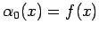
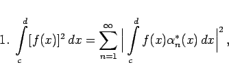
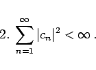

Inhalt Index DeskTop Bronstein

 Lineare Integralgleichungen Fredholmsche Integralgleichung 1. Art
Lineare Integralgleichungen Fredholmsche Integralgleichung 1. Art


Zur Lösung der Integralgleichung
bildet man mit  für  die Funktionen
die Funktionen
und
Existiert eine quadratisch integrierbare Lösung  von (11.56a), dann gilt:
von (11.56a), dann gilt:
Es wird nun angenommen, daß die Lösung  der Gleichung (11.56a) die Reihendarstellung
der Gleichung (11.56a) die Reihendarstellung
besitzt. In diesem Fall gilt für die Koeffizienten cn unter Beachtung von (11.56d)
Für die Existenz einer Lösungsdarstellung (11.56f) sind die folgenden Bedingungen notwendig und hinreichend:
|  | (11.57a) |
|  | (11.57b) |